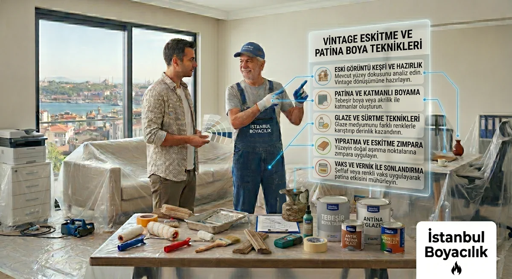

Eskitme, Vintage ve Patina Boya Teknikleri
Güncelleme: 5 Ekim 2026

Eskitme ve vintage boya teknikleri, yeni yüzeylere zamana yenik düşmüş, karakterli ve özgün bir görünüm kazandırır. Mobilyadan duvar yüzeyine, ahşaptan metalik kaplamaya kadar geniş bir uygulama alanına sahip bu teknikler, özellikle bohem, rustik ve endüstriyel tarzdaki iç mekanlarda tercih edilir.
Temel Eskitme Teknikleri
| Teknik | Uygulama Yüzeyi | Zorluk | Görünüm |
|---|---|---|---|
| Zımpara ile eskitme (distressing) | Ahşap, boyalı yüzey | Kolay | Kullanılmış, aşınmış kenarlar |
| Kuru fırça (dry brush) | Ahşap, duvar, beton | Kolay–Orta | İnce katmanlı, soluk renk geçişi |
| Glazur / tükrük tekniği | Duvar, sıva | Orta | Derin, yarı saydam ton katmanları |
| Patina efekti (metalik) | Ahşap, metal, mobilya | Orta–Zor | Bakır, bronz, bakır oksit görünümü |
| Crackling (çatlama efekti) | Ahşap, mobilya | Orta | Eski, çatlamış boya katmanı |
| Milk paint yıkama | Ahşap, tuval, kumaş | Kolay | Mat, köy evi tarzı antika görünüm |
Kuru Fırça (Dry Brush) Tekniği
En kolay ve en yaygın eskitme tekniğidir. Fırçaya az miktarda boya alınır ve büyük çoğunluğu silinip çıkarılır; ardından yüzeye kuru haliyle hafifçe sürülür. Katmanlar kurudukça aşınmış, soluk bir renk derinliği elde edilir.
- Taban rengi uygulayın ve kurumaya bırakın (genellikle koyu ton).
- Fırçaya az miktarda açık tona boya alın; fazlasını kağıt havluyla silin.
- Yüzeye hafif, düzensiz dokunuşlarla uygulayın. Fırça hemen hemen kuru olmalıdır.
- Kuru hale geldikten sonra ikinci bir tonu tekrarlayarak derinlik katın.
Patina Efekti: Bakır ve Bronz Görünümü
Patina, metallerin zamanla oksidasyona uğramasıyla oluşan renk değişimini simüler. Yüzeye metalik boya uygulandıktan sonra patina wax veya renk yıkaması ile oksit görünümü yaratılır.
Bakır patina için temel adımlar:
- Yüzeyi astar ile hazırlayın.
- Bronz veya bakır metalik boya uygulayın (rulo yerine sünger tercih edin — daha doğal doku).
- Hâlâ yaşken açık yeşil veya turkuaz ton renk wax ile ince tabaka oluşturun.
- Köşe ve girintilere koyu ton yoğunlaştırın — gerçek oksit birikimi böyle oluşur.
- Mat koruyucu vernik ile sabitleyin.
Crackling (Çatlama Efekti)
Özel crackle medium ürünleri ile gerçekçi çatlama efekti elde edilebilir:
- Taban rengi sürün ve kuruyunca crackle medium uygulayın.
- Medium kuruduktan sonra üst rengi tek kat sürün — kuruma sürecinde çatlaklar kendiliğinden oluşur.
- Fırça darbe yönü çatlakların yönünü belirler; yatay darbeler yatay çatlak verir.
- Boya katmanının kalınlığı çatlak boyutunu etkiler: kalın = büyük çatlaklar, ince = ince çatlaklar.
Glazür / Tükrük Tekniği
Tükrük (glaze) tekniği yarı saydam renk katmanları oluşturur ve duvar yüzeyine sıcak, derin bir görünüm kazandırır. Taban boya olarak saten veya parlak boya kullanılır; üzerine seyreltilmiş glazür karışımı sünger veya kumaşla alçalarak uygulanır.
İlgili Yazılar:
Geometrik duvar boyama rehberi | Accent wall fikirleri
Dekoratif boyama hizmetleri: Kadıköy, Beşiktaş, Şişli, Ataşehir
Sık Sorulan Sorular
Dekoratif ve Eskitme Boya Uygulamaları
Vintage, patina ve özel efekt boya uygulamaları için ücretsiz keşif talep edin.